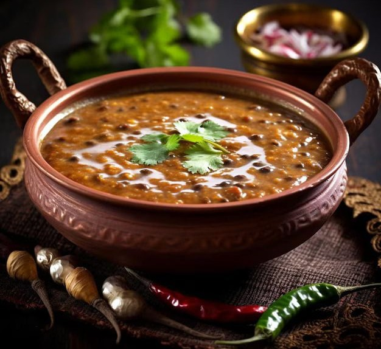

🍛 Daal Makhani

Description:
Daal Makhani is a rich and creamy North Indian dish made from black lentils,
kidney beans, butter, and cream. It's slow-cooked for hours for deep flavor
and served best with naan or jeera rice.
Prep Time:
⏱️ 40 minutes
Ingredients:
- 1 cup whole black lentils (urad dal)
- 1/4 cup red kidney beans (rajma)
- 2 tbsp butter + 1 tbsp oil
- 2 onions (finely chopped)
- 2 tomatoes (pureed)
- 1 tbsp ginger-garlic paste
- 1/2 tsp turmeric powder
- 1 tsp red chili powder
- 1/2 tsp garam masala
- 1/2 cup fresh cream
- Salt to taste
- Water as needed
Instructions:
- Soak the lentils and kidney beans overnight, then pressure cook them until soft.
- Heat oil and butter in a pan. Sauté onions until golden brown.
- Add ginger-garlic paste and cook for a minute.
- Stir in tomato puree, turmeric, chili powder, and salt. Cook till oil separates.
-
Add the cooked lentils and kidney beans. Mix well and simmer for
25–30 minutes, stirring occasionally.
- Add cream and garam masala. Simmer for 5 more minutes.
-
Serve hot, garnished with butter and cream, alongside naan or rice.